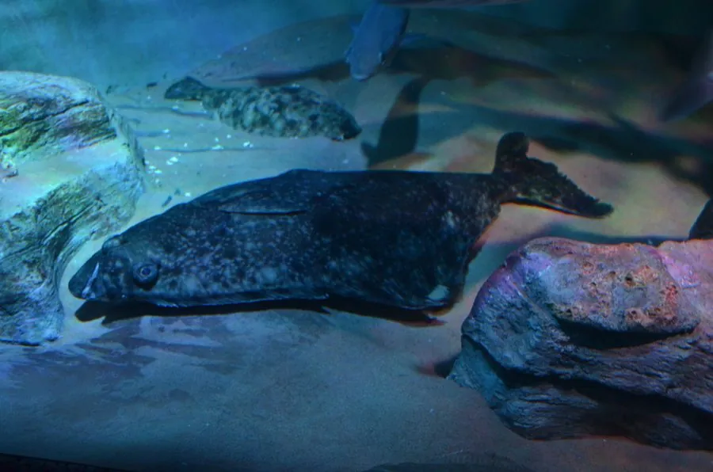

鱼类 · 动物界
大比目鱼 Hippoglossus hippoglossus

现存最大的比目鱼之一，生活于北大西洋深海，体长可超过 4 m，肉质厚实名贵，因生长缓慢和过度捕捞被列为濒危。
- 分类
- 门脊索动物门纲硬骨鱼纲目鲽形目科鲽科属庸鲽属
- 栖息环境
- 北大西洋水深 50–2000 m 的沙泥底质海域，冬春季在深海产卵
- 地理分布
- 北大西洋，从格陵兰、冰岛、北欧到加拿大东岸和美国东北岸，中国无自然分布
- 保护级别
- IUCN 濒危（EN）；中国无自然分布，未列入国家重点保护野生动物名录
物种志
大比目鱼体呈扁平的卵圆形，两眼都位于身体右侧，这是比目鱼最典型的特征。背面体色灰褐或暗褐色，有时带斑点，腹面白色；口大，牙齿锋利。成鱼体长一般 1–2 m，体重 20–80 kg，最大记录体长可超过 4 m、体重 300 kg 以上，是现存最大的比目鱼之一。
大比目鱼分布于北大西洋，从格陵兰、冰岛、北欧到加拿大东岸和美国东北岸，栖息于水深 50–2000 m 的沙泥底质海域。它是肉食性鱼类，捕食鱼类、乌贼、甲壳类和大型无脊椎动物。大比目鱼生长缓慢、寿命长，可活 50 年以上，性成熟也较晚；繁殖期在冬春季，亲鱼在深海产卵，卵和幼体浮游生活，幼鱼的眼睛会逐渐移到身体同一侧。由于生长慢、肉质名贵，长期捕捞使资源明显减少，IUCN 将其评为濒危；中国无自然分布，市场上的大比目鱼产品多为进口。
形态与习性
- 食性肉食性，捕食鱼类、乌贼、甲壳类和大型无脊椎动物
- 体长一般 1–2 m，最大记录超过 4 m
- 体重常见 20–80 kg，最大可超过 300 kg
- 寿命可达 50 年以上
- 繁殖冬春季在深海产卵，幼鱼眼睛逐渐移到同一侧
- 栖息深度水深 50–2000 m 的沙泥底质海域
趣味知识
- 大比目鱼的两只眼睛都在身体同一侧，这是比目鱼最典型的特征。
- 它游泳时身体侧卧在海底，靠背鳍和臀鳍的波浪运动缓慢移动。
- 大比目鱼生长极慢、寿命很长，最大个体可超过 4 m、300 kg。